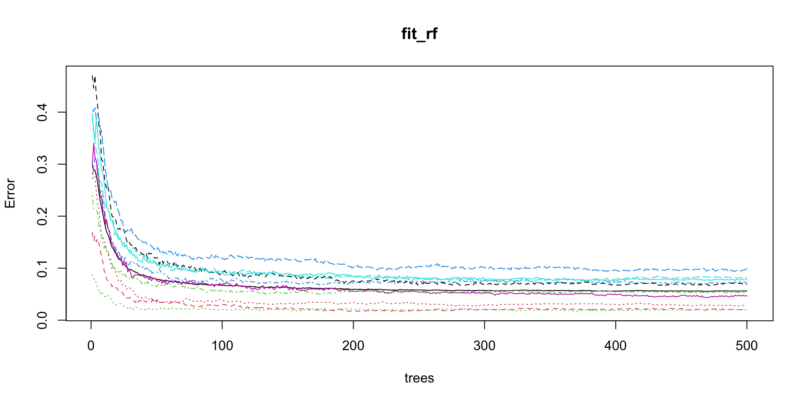
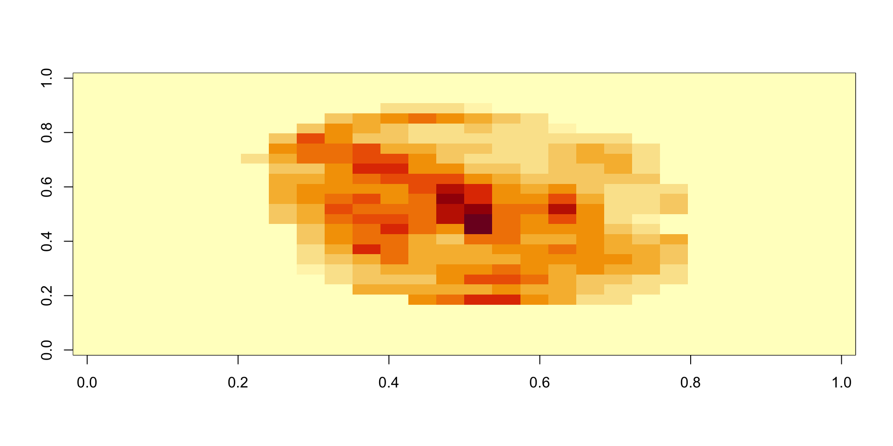
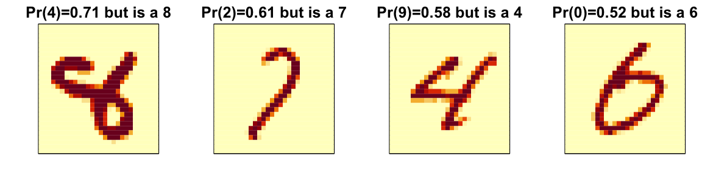

2026-12-09
Now that we have learned several methods and explored them with simple examples, we will try them out on a real example: the MNIST digits.
We can load this data using the following dslabs package:
During cross-validation or bootstrapping, the process of fitting models to different samples or using varying parameters can be performed independently.
Imagine you are fitting 100 models; if you had access to 100 computers, you could theoretically speed up the process by a factor of 100 by fitting each model on a separate computer and then aggregating the results.
Most modern computers, are equipped with multiple processors that allow for such parallel execution.
The caret package is set up to run in parallel but you have to let R know that you are want to parallelize your work.
To do this we can use the doParallel package:
Warning
When parallelizing tasks across multiple processors, it’s important to consider the risk of running out of memory.
Each processor might require a copy of the data or substantial portions of it, which can multiply overall memory demands.
This is especially challenging if the data or models are large.
We therefore us cross-validation to estimate our MSE.
The first step is to optimize for \(k\).
predict function defaults to using the best performing algorithm fit with the entire training data:When predicting, it is important that we not use the test set when finding the PCs nor any summary of the data, as this could result in overtraining.
We therefrom compute the averages needed for centering and the rotation on the training set:
In this example, we used the \(k\) optimized for the raw data, not the principal components.
Note that to obtain an unbiased MSE estimate we have to recompute the PCA for each cross-validation sample and apply to the validation set.
train function includes PCA as one of the available preprocessing operations we can achieve this with this modification of the code above:train_knn_pca <- train(x, y, method = "knn",
preProcess = c("nzv", "pca"),
trControl = trainControl("cv",
number = 20,
p = 0.95,
preProcOptions =
list(pcaComp = p)),
tuneGrid = data.frame(k = seq(1, 7, 2)))
y_hat_knn_pca <- predict(train_knn_pca, x_test, type = "raw")
confusionMatrix(y_hat_knn_pca, factor(y_test))$overall["Accuracy"] Accuracy
0.969 A limitation of this approach is that we don’t get to optimize the number of PCs used in the analysis.
To do this we need to write our own method.
mtry, the number of predictors that are randomly selected for each tree.train permits when using the default implementation from the randomForest package.The default method for estimating accuracy used by the train function is to test prediction on 25 bootstrap samples.
This can result in long compute times.
We can use the system.time function to estimate how long it takes to run the algorithm once:
One way to reduce run time is to use k-fold cross validation with a smaller number of test sets.
A popular choice is leaving out 5 test sets with 20% of the data.
To use this we set the trControl argument in train to:
trControl = trainControl(method = "cv", number = 5, p = .8)For random forest, we can also speed up the training step by running less trees per fit.
After running the algorithm once, we can use the plot function to see how the error rate changes as the number of trees grows.

We can use this finding to speed up the cross validation procedure.
Specifically, because the default is 500, by adding the argument ntree = 200 to the call to train
The procedure will finish 2.5 times faster.


The idea of an ensemble is similar to the idea of combining data from different pollsters to obtain a better estimate of the true support for each candidate.
In machine learning, one can usually greatly improve the final results by combining the results of different algorithms.
Here is a simple example where we compute new class probabilities by taking the average of random forest and kNN.
We have just built an ensemble with just two algorithms.
By combing more similarly performing, but uncorrelated, algorithms we can improve accuracy further.